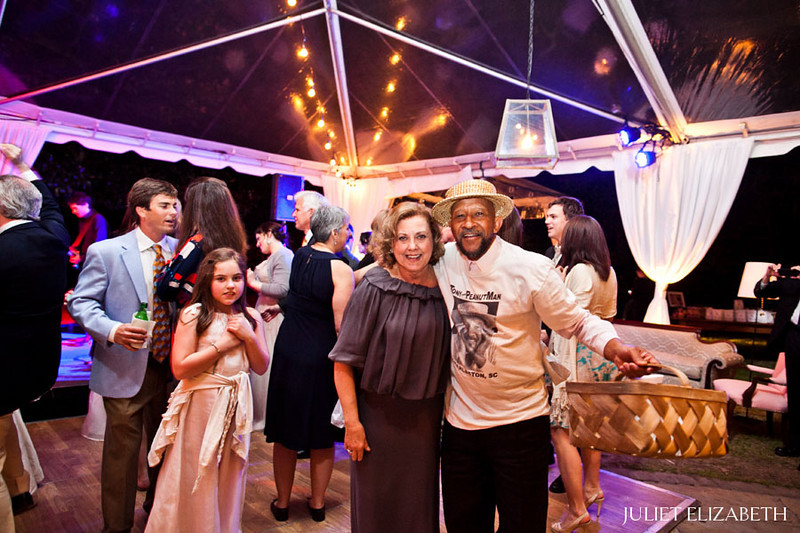

The Full Story of Tony the Peanut Man
Before there was a Tony The Peanut Man, there was an unassuming man named Anthony Wright. While Anthony was quite a capable man, his destiny was more laden with circumstance then with determination. He found himself happily employed in the shipping and receiving department of the multi-national Lockheed Aerospace. This provided him with a steady income and a comfortable lifestyle. Then all of this good fortune came crashing down for Anthony Wright. After a much publicized downsizing, Lockheed gave Anthony directions to the State Unemployment office. Anthony lost everything and was forced into bankruptcy. His next stop was a homeless shelter. He watched from the roadside but was unable to cross the threshold. Steeped in tradition while in line at the unemployment office Anthony had a chance encounter with Mr. Marion Hayward who sold peanuts for a living. Mr. Hayward explained to Anthony that he should jump out of line and never look back. Sell peanuts, he said and you will never have to stand in line again. Anthony refused. He did not want to work as a person selling peanuts on the street, he thought, it was a low-class job. Mr. Hayward then made a statement to Anthony that would change his outlook on life forever. Mr. Hayward told him “If you can do something for yourself, why not do it, as long as you stand in line you will always be waiting for hand-outs in life.” These words struck a cord in Anthony’s heart. He realized that ‘something’ is better than ‘nothing’. Mr. Hayward would soon substantiate his suggestion with a legitimate business proposal. Passing the torch years earlier Mr. Hayword had trained Ben Cambell in the art of selling peanuts to the public. Ben did so with a bow-tie and straw basket in hand. Mr. Hayward informed Anthony that Ben, the “King of Peanuts”, was retiring from his thrown. Therefore he needed a new man in the market and Anthony was his first choice. With a quick phone call Anthony soon met his mentor Ben Cambell. Ben Cambell gave Anthony a card teaching Anthony the now famous jingle,” got some some boiled got some roasted, got some stewed got some toasted.” Just as Anthony was determined to reinvent himself, he became aware of the vast traditions that preceded him. Selling produce in the old market is a time honored tradition. Anthony decided that a more light-hearted approach would better suit his cheerful personality. Within one week Anthony was selling peanuts at one dollar per bag for Marion. Anthony was instructed to keep forty cents for every bag he sold. A new career was born. He studied from the best and quickly became Tony The Peanut Man. With his signature song and dance, bow-tie outfit, and basket in hand, Tony was now armed with all the desire and support needed to become a successful recognizable figure. On his own Since 1998, Tony The Peanut Man has had his own line of peanut products packaged with his trademark image on canned boiled peanuts and bags of roasted peanuts. He is a mainstay at local high school and college sporting events as well as a fixture in the old market. These gourmet goobers can be seen in convenience stores and in many supermarkets including Piggly Wiggly, BI-LO, and Harris Teeter. 'Celebrity Each Year' Tony the Peanut Man gives countless speeches to motivate our youth. He visits many grade schools and church groups to deliver informative talks on peanuts as well as motivational messages revealing the benefits of hard work. His funny hat and off beat manor make him a hit with kids of all ages. Tony is most proud to return the fruit of his labor to the community at large by supplying and hosting an annual Labor Day cookout for the homeless in Charleston. He makes it a special day by personally serving each plate outside of the shelter environment. What a guy! It is truly an honor to work with a legend.
